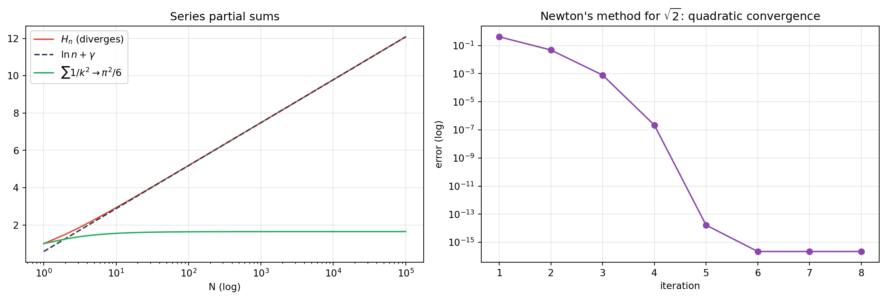

flowchart TD
S["Series Σ a_n"] --> T{"Does a_n → 0?"}
T --> |No| DIV["Diverges (term test)"]
T --> |Yes| POS{"Terms nonnegative?"}
POS --> |Yes| CMP["Comparison / limit comparison"]
CMP --> INT["Integral test → p-series"]
CMP --> RAT["Ratio test (d'Alembert)"]
CMP --> ROOT["Root test (Cauchy)"]
CMP --> COND["Cauchy condensation"]
POS --> |No| ALT{"Alternating?"}
ALT --> |Yes| LEI["Leibniz test"]
ALT --> |No| ABS{"Absolutely convergent?"}
ABS --> |Yes| CONV["Converges"]
ABS --> |No| DIR["Dirichlet / Abel tests"]
Sequences, Series, and Convergence Tests
Limits, Monotone and Cauchy Sequences, Absolute vs Conditional Convergence, the Complete Toolkit of Convergence and Divergence Tests, Power Series and Radius of Convergence, Asymptotics for Computing, Numerical Iteration and Acceleration, and Applications from Radioactive Decay Chains to Floating-Point Summation
Mathematics
Real Analysis
Numerical Analysis
Computation
Physics
A comprehensive treatment of sequences and series: convergence of sequences (monotone, bounded, Cauchy, limsup/liminf, Bolzano-Weierstrass, contraction), series and partial sums, absolute and conditional convergence, rearrangement, geometric/harmonic/telescoping series, the full catalogue of convergence and divergence tests (term, comparison, limit comparison, integral, p-series, ratio, root, Raabe, Kummer, Gauss, condensation, Dirichlet, Abel, Leibniz, Bertrand), power series and the radius of convergence, asymptotics and complexity for computer science, numerical algorithms (bisection, fixed point, Newton, secant, gradient descent), series acceleration (Aitken, Richardson, Euler) and compensated summation (Kahan), and applications including radioactive decay chains (Bateman equations), with an executable Python laboratory.
“The infinite series is the true instrument of analysis.”
— Niels Henrik Abel
A sequence is an ordered list; a series is its infinite sum. Whether that sum converges is the central question of analysis, and the answer governs everything from Taylor approximations and floating-point algorithms to radioactive decay and the complexity of a program. This essay develops the theory and the full test toolkit, then descends into numerical practice.
TipCompanion Treatises in this Series
1 1. Introduction
Two objects dominate:
- A sequence \((a_n)\) converges to \(L\) if \(a_n\to L\): for every \(\varepsilon>0\) there is \(N\) with \(|a_n-L|<\varepsilon\) for all \(n\ge N\).
- A series \(\sum_{n=1}^\infty a_n\) converges if its sequence of partial sums \(S_N=\sum_{n=1}^N a_n\) converges.
Everything reduces to sequences of partial sums. The art is deciding convergence without computing the limit, using tests.
2 2. Sequences
2.1 2.1 Convergence and Basic Theorems
Definition 1 (Definition 2.1 (Convergent sequence)) \((a_n)\) converges to \(L\in\mathbb{R}\) if \[ \forall\varepsilon>0\ \exists N\ \forall n\ge N:\ |a_n-L|<\varepsilon. \] Otherwise it diverges (to \(\pm\infty\) or by oscillation).
| Theorem | Statement |
|---|---|
| Uniqueness | limits are unique |
| Algebra | sums, products, quotients (nonzero limit) behave |
| Squeeze | \(a_n\le b_n\le c_n\), \(a_n,c_n\to L\Rightarrow b_n\to L\) |
| Monotone convergence | bounded monotone sequences converge |
| Boundedness | convergent \(\Rightarrow\) bounded (converse false) |
| Subsequences | \(a_n\to L\) iff every subsequence does |
2.2 2.2 \(\limsup\) and \(\liminf\)
For any bounded sequence, \[ \limsup_n a_n=\lim_{n\to\infty}\sup_{k\ge n}a_k,\qquad \liminf_n a_n=\lim_{n\to\infty}\inf_{k\ge n}a_k. \] Then \(a_n\to L\) iff \(\limsup a_n=\liminf a_n=L\). The Bolzano–Weierstrass theorem states that every bounded sequence in \(\mathbb{R}^n\) has a convergent subsequence — the foundation of compactness.
2.3 2.3 Cauchy Sequences and Completeness
\((a_n)\) is Cauchy if \(\forall\varepsilon\ \exists N\ \forall m,n\ge N: |a_m-a_n|<\varepsilon\). In \(\mathbb{R}\), Cauchy \(\iff\) convergent (completeness); in \(\mathbb{Q}\) they differ (see the rational line article).
2.4 2.4 Recursive Sequences and Contraction
If \(a_{n+1}=g(a_n)\) and \(g\) is a contraction on a complete metric space (\(|g(x)-g(y)|\le k|x-y|\), \(k<1\)), the Banach fixed-point theorem guarantees a unique fixed point \(L=g(L)\) and \(a_n\to L\) geometrically. This is the engine of iterative numerical algorithms (Section 7).
3 3. Series
3.1 3.1 Convergence and Partial Sums
\[ S_N=\sum_{n=1}^N a_n,\qquad \sum_{n=1}^\infty a_n := \lim_{N\to\infty} S_N. \] If the series converges then \(a_n\to0\) (term test — necessary, not sufficient: \(\sum 1/n\) diverges).
3.2 3.2 The Canonical Series
| Series | Sum | Behavior |
|---|---|---|
| Geometric \(\sum_{n=0}^\infty r^n\) | \(\dfrac{1}{1-r}\) | converges iff \(\lvert r\rvert<1\) |
| Harmonic \(\sum 1/n\) | diverges | grows like \(\ln N+\gamma\) |
| \(p\)-series \(\sum 1/n^p\) | \(\zeta(p)\) | converges iff \(p>1\) |
| Telescoping \(\sum (b_n-b_{n+1})\) | \(b_1-\lim b_n\) | converges iff \(b_n\) converges |
| Alternating harmonic \(\sum(-1)^{n+1}/n\) | \(\ln 2\) | converges conditionally |
| Basel \(\sum 1/n^2\) | \(\pi^2/6\) | converges |
| \(\sum 1/n!\) | \(e\) | converges |
3.3 3.3 Absolute and Conditional Convergence
- \(\sum a_n\) converges absolutely if \(\sum |a_n|\) converges.
- It converges conditionally if it converges but not absolutely.
Absolute convergence \(\Rightarrow\) convergence, and absolutely convergent series may be rearranged arbitrarily without changing the sum. Conditionally convergent series may not: Riemann’s rearrangement theorem shows that by reordering the terms of \(\sum(-1)^{n+1}/n\) one can obtain any prescribed real sum (or make it diverge).
4 4. The Convergence Test Toolkit
Theorem 1 (The Standard Tests) Let \(a_n\ge0\) (or handle signs via absolute convergence). 1. Term test. If \(a_n\not\to0\), diverge. 2. Geometric test. \(\sum r^n\) converges iff \(|r|<1\). 3. Comparison. If \(0\le a_n\le b_n\) and \(\sum b_n\) converges, so does \(\sum a_n\); if \(\sum a_n\) diverges, so does \(\sum b_n\). 4. Limit comparison. If \(a_n/b_n\to c\in(0,\infty)\), then \(\sum a_n\) and \(\sum b_n\) behave alike. 5. Integral test. If \(f\) is positive, continuous, decreasing with \(f(n)=a_n\), then \(\sum a_n\) and \(\int_1^\infty f(x)\,dx\) converge together. 6. \(p\)-series. \(\sum 1/n^p\) converges iff \(p>1\). 7. Ratio (d’Alembert). Let \(L=\lim |a_{n+1}/a_n|\): converge if \(L<1\), diverge if \(L>1\), inconclusive if \(L=1\). 8. Root (Cauchy). Let \(L=\limsup |a_n|^{1/n}\): same conclusions. 9. Raabe. If \(\lim n(1-|a_{n+1}/a_n|)=R\): converge if \(R>1\), diverge if \(R<1\). 10. Kummer. The general comparison; ratio and Raabe are special cases. 11. Cauchy condensation. For non-increasing \(a_n\ge0\), \(\sum a_n\) and \(\sum 2^n a_{2^n}\) converge together. 12. Alternating (Leibniz). If \(a_n\downarrow0\), then \(\sum(-1)^{n}a_n\) converges. 13. Dirichlet. If partial sums of \(\sum b_n\) are bounded and \(a_n\downarrow0\), then \(\sum a_n b_n\) converges. 14. Abel. If \(\sum b_n\) converges and \((a_n)\) is bounded monotone, then \(\sum a_n b_n\) converges. 15. Bertrand. A refined ratio test resolving some \(L=1\) cases.
How to choose. The Mermaid flowchart above encodes the decision procedure: term test first; then nonnegativity routes to comparison/integral/ratio/root/condensation; signs route to absolute convergence, then Leibniz/Dirichlet/Abel.
TipWorked Example 4.1: Ratio vs Root vs Integral
- \(\sum n!/n^n\): ratio gives \(L=1/e<1\) → converges.
- \(\sum (n/(2n+1))^n\): root gives \(L=1/2<1\) → converges.
- \(\sum 1/(n\ln n)\): integral test gives \(\int \frac{dx}{x\ln x}=\ln\ln x\to\infty\) → diverges (so does condensation).
5 5. Power Series and Radius of Convergence
Definition 2 (Definition 5.1 (Power series)) \[ \sum_{n=0}^{\infty} c_n (x-a)^n. \] Its radius of convergence is \[ R=\frac{1}{\limsup_n |c_n|^{1/n}}\in[0,\infty], \] by the Cauchy–Hadamard theorem; the series converges absolutely for \(|x-a|<R\) and diverges for \(|x-a|>R\). Behavior at the endpoints requires separate tests.
A power series defines an analytic function inside its disk; term-by-term differentiation and integration are valid on \((a-R,a+R)\). Taylor’s theorem approximates a smooth function by a polynomial with remainder \[ R_n(x)=\frac{f^{(n+1)}(\xi)}{(n+1)!}(x-a)^{n+1}, \] whose size controls the truncation error of numerical algorithms.
6 6. Asymptotics and Computing
Sequences and series are the language of algorithm analysis:
| Object | Asymptotics |
|---|---|
| Harmonic number \(H_n=\sum_{k=1}^n 1/k\) | \(\ln n+\gamma+O(1/n)\) |
| Factorial (Stirling) | \(n!\sim\sqrt{2\pi n}\,(n/e)^n\) |
| Geometric sum | \(\sum_{k=0}^n r^k=(1-r^{n+1})/(1-r)\) |
| Log-sum | \(\sum_{k=1}^n \log k=\log n!\) |
| Master theorem recurrences | \(T(n)=aT(n/b)+f(n)\) |
Big-O, Big-\(\Theta\), Big-\(\Omega\) compare sequences of costs; convergence of error terms justifies convergence rates (linear, quadratic) of numerical methods.
7 7. Numerical Algorithms: Convergence in Practice
| Method | Iteration | Convergence |
|---|---|---|
| Bisection | halve the interval | linear, factor \(1/2\) |
| Fixed point | \(x_{n+1}=g(x_n)\) | linear if \(\lvert g'(L)\rvert<1\) |
| Newton | \(x_{n+1}=x_n-f(x_n)/f'(x_n)\) | quadratic: \(e_{n+1}\approx C e_n^2\) |
| Secant | uses two points | superlinear, order \(\varphi\approx1.618\) |
| Gradient descent | \(x_{n+1}=x_n-\eta\nabla f\) | linear for strongly convex \(f\) |
| Power iteration / PageRank | matrix-vector iteration | linear at spectral-gap rate |
Series acceleration. Slowly convergent series can be transformed: - Aitken’s \(\Delta^2\): \(s_n' = s_n-\dfrac{(s_{n+1}-s_n)^2}{s_{n+2}-2s_{n+1}+s_n}\); - Richardson extrapolation for \(O(h^p)\) errors; - Euler transform for alternating series.
Compensated summation. Naive floating-point summation of \(\sum 1/n^2\) accumulates error; Kahan summation tracks a compensation term and achieves near machine-precision accuracy.
8 8. Applications
8.1 8.1 Radioactive Decay Chains and the Bateman Equations
For the chain \(A\xrightarrow{\lambda_A}B\xrightarrow{\lambda_B}C\), the populations satisfy \[ \dot N_A=-\lambda_A N_A,\qquad \dot N_B=\lambda_A N_A-\lambda_B N_B. \] The solution is a sum of exponentials (a finite exponential series): \[ N_A(t)=N_0 e^{-\lambda_A t},\qquad N_B(t)=N_0\frac{\lambda_A}{\lambda_B-\lambda_A}\bigl(e^{-\lambda_A t}-e^{-\lambda_B t}\bigr). \] Longer chains produce the Bateman equations, whose coefficients are partial-fraction (series) expansions. This connects probability (exponential/Poisson waiting times) to linear ODEs and to the probability article.
8.2 8.2 Other Applications
| Field | Series/sequence at work |
|---|---|
| Hardware/firmware | Taylor polynomials for \(\sin,\cos,e^x,\ln\) |
| Signal processing | Fourier and \(z\)-transforms |
| Numerical ODEs/PDEs | Euler, Runge–Kutta, CFL stability |
| Finance | geometric series for annuities, NPV, IRR |
| Population dynamics | logistic and recurrence models |
| Computer graphics | iterative root finding, Bézier subdivision |
| Cryptography | modular power series, generating functions |
| Machine learning | gradient descent, mini-batch convergence |
9 9. Computational Laboratory
Code
import numpy as np
import matplotlib.pyplot as plt
from math import log
GAMMA = 0.5772156649015328606 # Euler–Mascheroni constant
fig, axes = plt.subplots(1, 2, figsize=(13, 4.5))
N = 100000
harm = np.cumsum(1/np.arange(1, N+1))
ns = np.arange(1, N+1)
axes[0].plot(ns, harm, color='#e74c3c', lw=1.5, label=r'$H_n$ (diverges)')
axes[0].plot(ns, np.log(ns) + GAMMA, '--', color='#2c3e50', lw=1.5, label=r'$\ln n+\gamma$')
p2 = np.cumsum(1/np.arange(1, N+1)**2)
axes[0].plot(ns, p2, color='#27ae60', lw=1.5, label=r'$\sum 1/k^2 \to \pi^2/6$')
axes[0].set_xscale('log'); axes[0].set_title("Series partial sums")
axes[0].set_xlabel("N (log)"); axes[0].legend(); axes[0].grid(alpha=0.3)
# Newton quadratic convergence for sqrt(2)
x = 3.0
errs = []
for _ in range(8):
x = 0.5*(x + 2/x)
errs.append(abs(x - np.sqrt(2)))
errs = np.array(errs)
axes[1].semilogy(range(1, len(errs)+1), errs, 'o-', color='#8e44ad', lw=1.5)
axes[1].set_title(r"Newton's method for $\sqrt{2}$: quadratic convergence")
axes[1].set_xlabel("iteration"); axes[1].set_ylabel("error (log)"); axes[1].grid(alpha=0.3, which='both')
plt.tight_layout(); plt.show()
print("quadratic error ratios e_{n+1}/e_n^2:", (errs[1:]/errs[:-1]**2).round(4))
quadratic error ratios e_{n+1}/e_n^2: [2.72700000e-01 3.42000000e-01 3.53400000e-01 3.51500000e-01
8.00639934e+11 4.50359963e+15 4.50359963e+15]Code
import numpy as np
from scipy import integrate
import math
print("=== 1. CONVERGENCE TESTS IN ACTION ===")
N = 2_000_000
print(f" harmonic H_N - ln N = {np.sum(1/np.arange(1,N+1)) - math.log(N):.6f} (→ γ = 0.577216)")
print(f" sum 1/n^2 = {np.sum(1/np.arange(1,N+1)**2):.8f} (π²/6 = {math.pi**2/6:.8f})")
print(f" alternating harmonic = {np.sum((-1)**np.arange(0,N)/(np.arange(1,N+1))):.8f} (ln2 = {math.log(2):.8f})")
# p-series convergence threshold via integral test
for p in [0.5, 1.0, 1.5, 2.0]:
partial = np.sum(1/np.arange(1,200000+1)**p)
verdict = "converges" if p > 1 else "diverges"
print(f" p={p}: partial sum(2e5)={partial:10.4f} ({verdict}; ζ(p)>{1/(p-1) if p>1 else float('inf'):.3f})")
print("\n=== 2. RATIO AND ROOT TESTS ===")
for name, f_ratio, f_root in [
("sum n!/n^n", lambda n: math.factorial(n+1)/(n+1)**(n+1) / (math.factorial(n)/n**n), lambda n: (math.factorial(n)/n**n)**(1/n)),
("sum (n/(2n+1))^n", lambda n: ((n+1)/(2*(n+1)+1))**(n+1) / (n/(2*n+1))**n, lambda n: ((n/(2*n+1))**n)**(1/n)),
]:
print(f" {name}: ratio L≈{f_ratio(200):.6f}, root L≈{f_root(200):.6f}")
print("\n=== 3. NEWTON vs BISECTION CONVERGENCE ORDER ===")
def newton(f, df, x0, n):
xs=[x0]
for _ in range(n):
x0 = x0 - f(x0)/df(x0); xs.append(x0)
return xs
xs = newton(lambda x: x*x-2, lambda x: 2*x, 3.0, 6)
errs = [abs(x-math.sqrt(2)) for x in xs]
print(" Newton errors:", [f"{e:.2e}" for e in errs])
print(" ratios e_{n+1}/e_n^2:", [f"{errs[i+1]/errs[i]**2:.3f}" for i in range(len(errs)-1)])
print("\n=== 4. SERIES ACCELERATION: AITKEN Δ² ON LEIBNIZ SERIES ===")
def aitken(seq):
return [seq[i] - (seq[i+1]-seq[i])**2/(seq[i+2]-2*seq[i+1]+seq[i]) for i in range(len(seq)-2)]
partial = np.cumsum([4*(-1)**k/(2*k+1) for k in range(60)])
acc = aitken(list(partial))
print(f" raw partial sum after 60 terms: {partial[-1]:.8f} (π={math.pi:.8f})")
print(f" Aitken-accelerated: {acc[-1]:.8f}")
print("\n=== 5. KAHAN COMPENSATED SUMMATION ===")
vals = [1.0/n for n in range(1, 1000000+1)]
naive = sum(vals)
kahan = 0.0; c = 0.0
for v in vals:
y = v - c; t = kahan + y; c = (t - kahan) - y; kahan = t
fsum = math.fsum(vals)
print(f" naive = {naive:.12f}")
print(f" Kahan = {kahan:.12f}")
print(f" fsum = {fsum:.12f} (accurate reference)")
print("\n=== 6. RADIOACTIVE DECAY CHAIN (BATEMAN EQUATION) ===")
N0, lA, lB = 1000.0, 0.5, 0.1
def NB(t):
return N0*lA/(lB-lA)*(math.exp(-lA*t)-math.exp(-lB*t))
for t in [1, 2, 5, 10, 20]:
print(f" t={t:>2}: N_A={N0*math.exp(-lA*t):8.3f} N_B (Bateman)={NB(t):8.3f}")
# verify N_B against numerical ODE solution
sol = integrate.solve_ivp(lambda t,y: [-lA*y[0], lA*y[0]-lB*y[1]], [0,20], [N0,0.0], t_eval=[10.0])
print(f" numerical ODE N_B(10) = {sol.y[1][0]:.5f} vs analytic {NB(10):.5f}")=== 1. CONVERGENCE TESTS IN ACTION ===
harmonic H_N - ln N = 0.577216 (→ γ = 0.577216)
sum 1/n^2 = 1.64493357 (π²/6 = 1.64493407)
alternating harmonic = 0.69314693 (ln2 = 0.69314718)
p=0.5: partial sum(2e5)= 892.9680 (diverges; ζ(p)>inf)
p=1.0: partial sum(2e5)= 12.7833 (diverges; ζ(p)>inf)
p=1.5: partial sum(2e5)= 2.6079 (converges; ζ(p)>2.000)
p=2.0: partial sum(2e5)= 1.6449 (converges; ζ(p)>1.000)
=== 2. RATIO AND ROOT TESTS ===
sum n!/n^n: ratio L≈0.368797, root L≈0.374502
sum (n/(2n+1))^n: ratio L≈0.499998, root L≈0.498753
=== 3. NEWTON vs BISECTION CONVERGENCE ORDER ===
Newton errors: ['1.59e+00', '4.19e-01', '4.79e-02', '7.85e-04', '2.18e-07', '1.67e-14', '2.22e-16']
ratios e_{n+1}/e_n^2: ['0.167', '0.273', '0.342', '0.353', '0.351', '800639933754.755']
=== 4. SERIES ACCELERATION: AITKEN Δ² ON LEIBNIZ SERIES ===
raw partial sum after 60 terms: 3.12492714 (π=3.14159265)
Aitken-accelerated: 3.14159144
=== 5. KAHAN COMPENSATED SUMMATION ===
naive = 14.392726722865
Kahan = 14.392726722866
fsum = 14.392726722866 (accurate reference)
=== 6. RADIOACTIVE DECAY CHAIN (BATEMAN EQUATION) ===
t= 1: N_A= 606.531 N_B (Bateman)= 372.883
t= 2: N_A= 367.879 N_B (Bateman)= 563.564
t= 5: N_A= 82.085 N_B (Bateman)= 655.557
t=10: N_A= 6.738 N_B (Bateman)= 451.427
t=20: N_A= 0.045 N_B (Bateman)= 169.112
numerical ODE N_B(10) = 451.40753 vs analytic 451.4268710 10. Summary
\[ \begin{aligned} &\textbf{Sequences: } && a_n\to L;\ \text{Cauchy}\iff\text{convergent in }\mathbb{R};\ \text{Bolzano–Weierstrass.}\\[3pt] &\textbf{Series: } && \sum a_n \text{ converges} \iff (S_N) \text{ converges};\quad a_n\to0 \text{ necessary.}\\[3pt] &\textbf{Tests: } && \text{term, comparison, integral, }p\text{-series, ratio, root, condensation, Leibniz, Dirichlet.}\\[3pt] &\textbf{Power series: } && R=1/\limsup|c_n|^{1/n};\ \text{analytic on }|x|<R.\\[3pt] &\textbf{Computation: } && \text{Newton quadratic; Aitken faster; Kahan accurate.} \end{aligned} \]
11 11. Curated References and Primary Sources
- Knopp, Konrad (1956). Infinite Sequences and Series. Dover.
- Rudin, Walter (1976). Principles of Mathematical Analysis, 3rd ed. McGraw-Hill. (Ch. 3.)
- Apostol, Tom (1974). Mathematical Analysis, 2nd ed. Addison-Wesley.
- Bromwich, T. J. I’A. (1908). An Introduction to the Theory of Infinite Series. Macmillan.
- Hardy, G. H. (1949). Divergent Series. Oxford.
- Kahan, William (1965). “Further remarks on reducing truncation errors”. Comm. ACM, 8(1): 40.
- Burden, R. & Faires, J. D. (2010). Numerical Analysis, 9th ed. Brooks/Cole.
- Press, W. et al. (2007). Numerical Recipes: The Art of Scientific Computing, 3rd ed. Cambridge.
- Sidi, Avram (2003). Practical Extrapolation Methods. Cambridge University Press.
- Higham, Nicholas (2002). Accuracy and Stability of Numerical Algorithms, 2nd ed. SIAM.